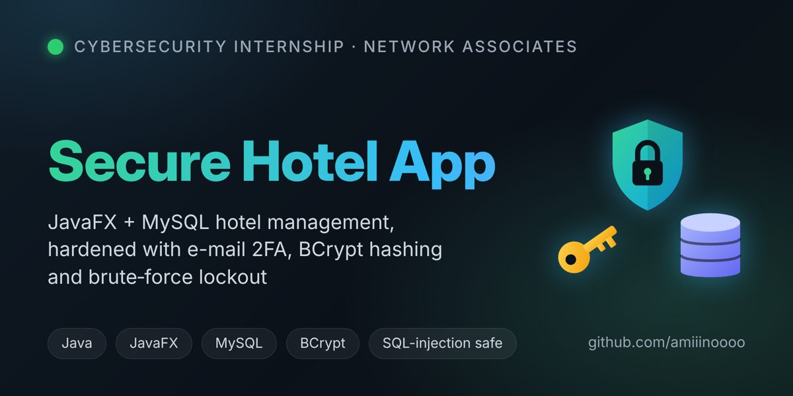
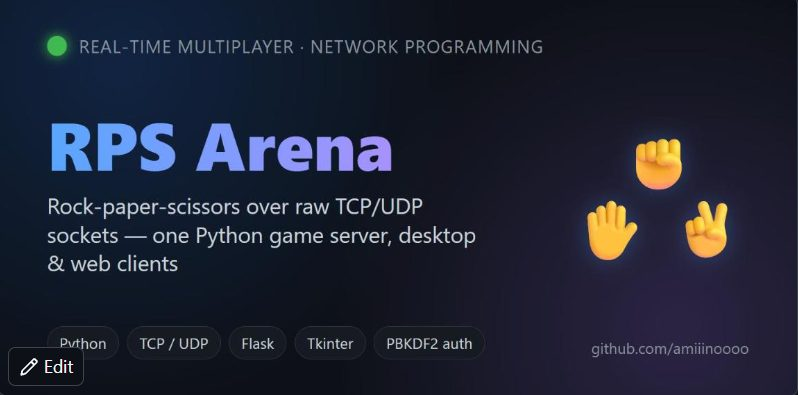
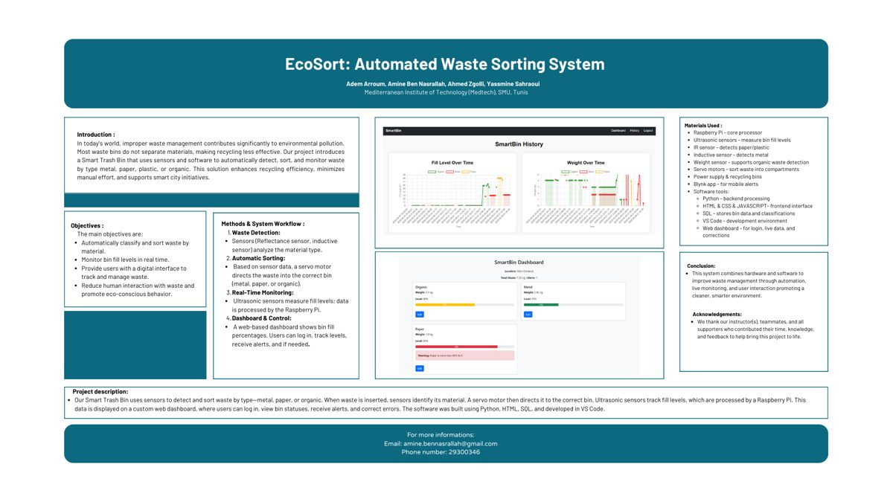
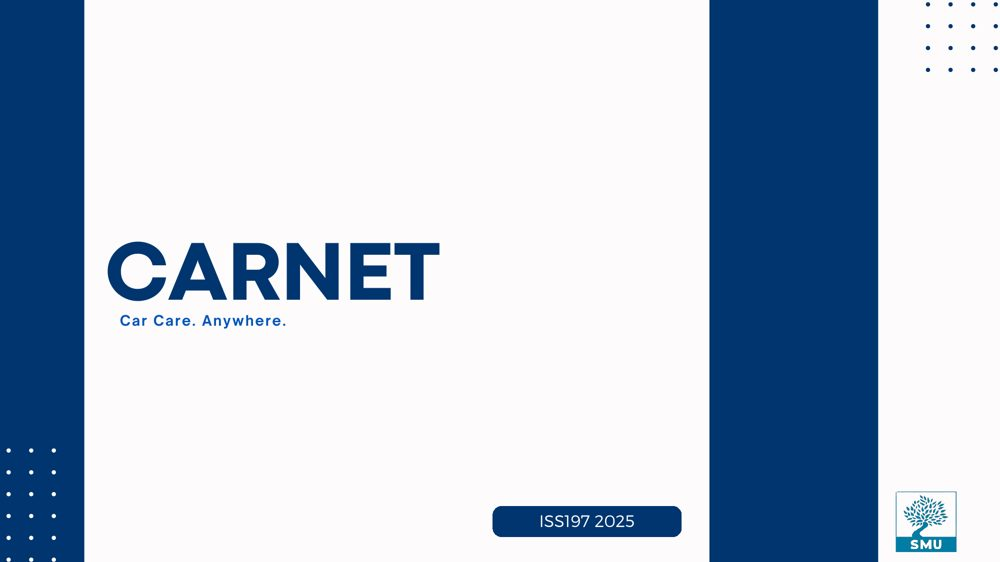

Academic Journey
My internship, projects, favourite courses and company visits at MedTech.
Internships

Cybersecurity Intern – Network Associates (NA)
I secured a hotel management desktop application built with JavaFX and MySQL:
- Authentication with e-mail verification (expiring one-time codes), BCrypt password hashing and brute-force lockout.
- Role-based access control (staff / client) with a hierarchical request-validation workflow to block privilege escalation.
- Input validation, sanitization and prepared statements on every query to prevent SQL injection.
- Logging, error handling, and credentials moved out of the code into environment variables.
Projects
Course and team projects from my years at MedTech, each with its code, slides and report.

SmartHouse – Voice-Controlled Home on STM32
Talk to your house: a mobile app sends voice commands to an n8n workflow running a local LLM (Ollama), which turns them into HTTP commands for an STM32 board. The STM32, programmed in C with an ESP8266 web server, drives lights, a heater and servo-controlled doors.

RPS Arena – Multiplayer Game over TCP/UDP
Real-time rock-paper-scissors built on raw sockets. One Python game server handles accounts, rooms and scores over TCP and heartbeats, chat and countdown over UDP, for both a Tkinter desktop client and a Flask web client published over HTTPS.

Wi-Fi Signal Mapper – ESP32 on a Custom PCB
A handheld ESP32 device on a PCB I designed in Altium, in a 3D-printed enclosure. It measures Wi-Fi strength around a building and a Flask back-end with a Tkinter interface turns the readings into a heatmap.

Customer Segmentation & Demand Prediction
On the Online Retail II dataset, I built RFM features and used K-Means to split customers into VIP, Loyal, At-Risk and Lost segments, then compared Logistic Regression, KNN and Random Forest to predict demand.

EcoSort – Smart Waste-Sorting Bin
A bin that detects the type of waste with sensors and uses servo flaps to sort it into the right compartment, with a Flask dashboard showing the fill level of each bin. Designed in SolidWorks.

PlugJuice – Smart Plug
An IoT smart plug that tracks energy consumption in real time, protects against voltage spikes and can be switched remotely, with a consumption dashboard. Enclosure designed in SolidWorks.

Carnet – Car-Management App Concept
A startup concept for a car-management app: market study, business-opportunity screening, feasibility and a final pitch.
More on GitHub: CareApp (installable hydration-reminder web app) · Student Grades Manager (Java).
Interesting Courses
Courses that changed how I think about engineering.
Embedded Systems
Programming an STM32 (ARM Cortex-M4) board in C: GPIO, interrupts and SPI, real-time design with RTOS concepts and system modelling with SysML. The course ended with our SmartHouse project.
Prompt Engineering
How large language models work and how to use them well: prompting techniques, retrieval-augmented generation (RAG) and AI agents. With a teammate I built a RAG workflow in n8n that indexes uploaded PDFs and CSVs in a vector store and answers questions with memory, with file upload through Telegram.
Startup Engineering
From problem to pitch: finding and screening a business opportunity, design thinking, building a prototype story and pitching it. Our team developed Carnet, a car-management app concept, and I completed the University of Virginia's Design Thinking course alongside it.
Database Management
Entity-relationship modelling, mapping to the relational model, SQL and transactions. I designed complete schemas for a hospital and a university system in MySQL Workbench and completed three practical lab exams.
Company Visits
Network Associates (NA) – Lac 1, Tunis
My internship took me inside Network Associates in Tunis, where I saw how a professional IT team organises its work and delivers software.